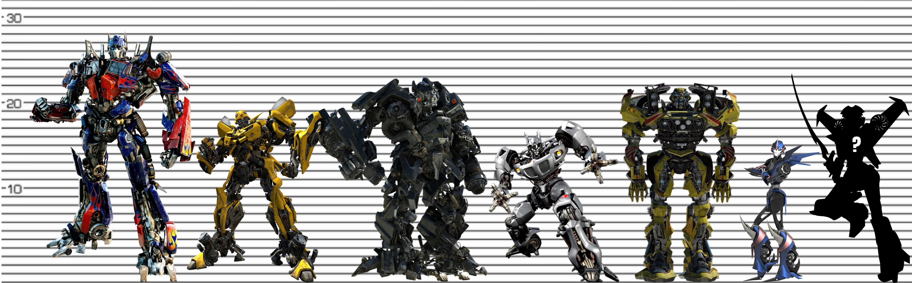
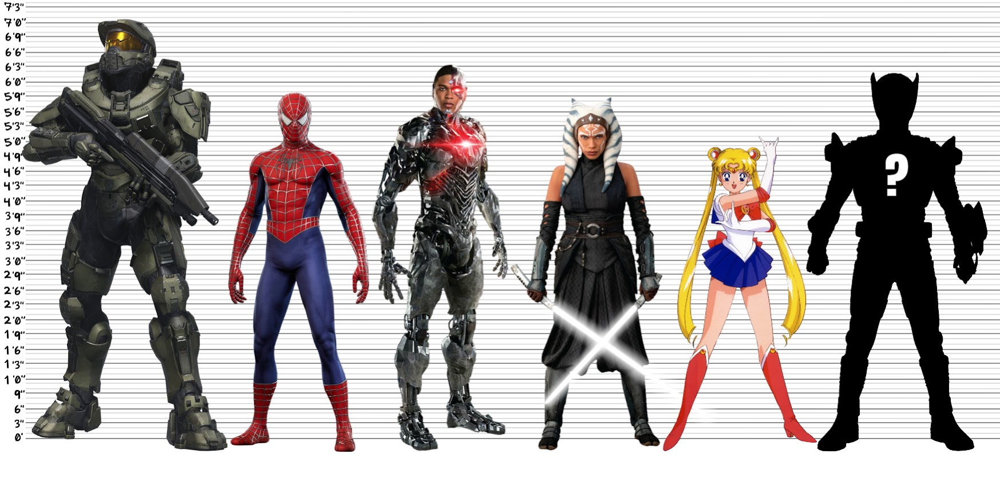
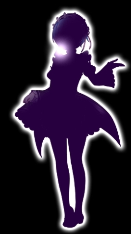

The multiverse has been tapped into at the wrong time, and grid battleforce must up the act made from the autobot/decepticon war that entered the power rangers universe. Unexpectedly joining them are stranded heroes from different worlds, including a spartan soldier, a masked vigilante, a cyborg, a jedi master, and a sailor scout; while they help their new allies, they will question if they are responsible for the battle as the power rangers and transfomers are. During the chaos, a small ragtag team tries to survive in this unfamililair world while searching for an unchained rouge demon. See your favorite characters from many different series join forces in this fan made series. Unit-E is a stopmotion series with popular characters from video games, movies, and shows as they interact and fight together to stop evil from rising.   